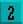

This is used to copy a block of graphics from one Object to another. Click on, hold, move
and click off to open the box in your picture, ready for pasting.
This is used to copy a block of graphics from one Object to another. Click on, hold, move
and click off to open the box in your picture, ready for pasting.BAR
Set up diagonally opposite corners of a bar in the usual way, and then release the button to
fill it with the current colour, or selected pattern. The outline of the bar can be toggled off
and on by clicking on the border section of the current Pattern Display window.
PAINT ROLLER or FILL
This is a dramatic drawing tool! Position your paint roller cursor anywhere inside an
enclosed shape, and it will be filled with instant colour or pattern. New patterns can be
selected from the Pattern Display window.
TEXT CAPTIONS
Select this icon, then click the mouse button in a likely position inside the Edit Window,
and start typing one line of characters. Of course, not much text can be squeezed inside an
Object, unless it happens to be extremely wide!
Now reposition the text by dragging and clicking the mouse, and pasting multiple copies of the text if you wish. Outline and shadow effects may be created, using different colours.
COPY BLOCK
This is used to copy a block of graphics from one Object to another. Click on, hold, move
and click off to open the box in your picture, ready for pasting.
PASTE BLOCK
 Use this option to grab the previous block that has already been copied, and restore it to
any position within the editing area. Try cutting and pasting a few blocks now.
Use this option to grab the previous block that has already been copied, and restore it to
any position within the editing area. Try cutting and pasting a few blocks now.
OPAQUE
 All the time this option is off, colour zero of the block which is being edited will be
transparent. If you click the [OPAQUE] button on, colour zero is filled by the colour under
the control of the right mouse button.
All the time this option is off, colour zero of the block which is being edited will be
transparent. If you click the [OPAQUE] button on, colour zero is filled by the colour under
the control of the right mouse button.
CLEAR
Everyone makes mistakes, and this option is the one that clears all of your current efforts
away, leaving a blank Edit Window. Everyone makes several mistakes, and the [UNDO]
icon is provided to bring it all back again!
The next block of five drawing icons affects the entire image with dramatic results.
SCROLL 1
 After selecting this option, grab the image in the Edit Window with your mouse and scroll
it anywhere you want. Release the mouse button to leave the image at its new position.
After selecting this option, grab the image in the Edit Window with your mouse and scroll
it anywhere you want. Release the mouse button to leave the image at its new position.
SCROLL 2

This not only scrolls the image, but also wraps it back around itself when you hit the
borders of the Edit Window.